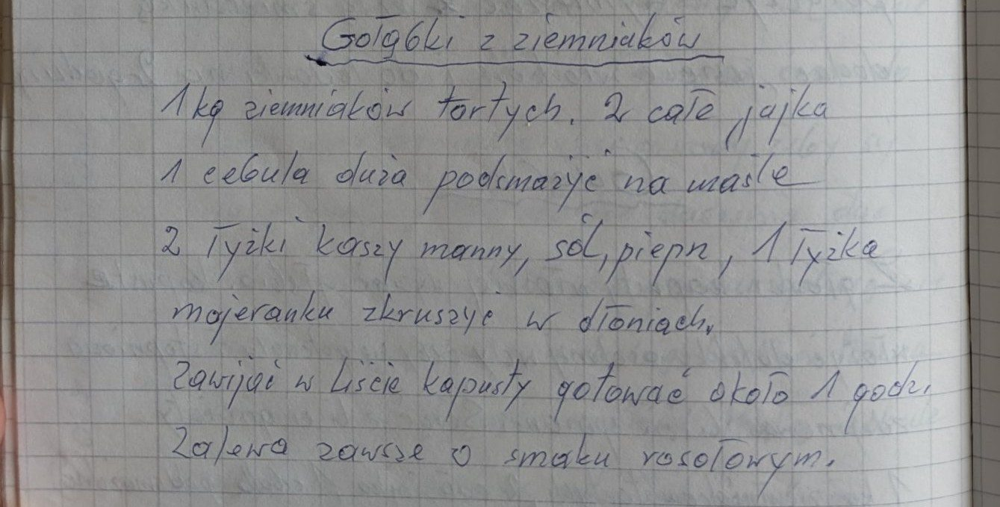

Gołąbki z ziemniaków


Składniki
- 1 kg tartych ziemniaków
- 2 całe jajka
- 1 duża cebula
- masło
- 2 łyżki kaszy manny
- sól, pieprz
- 1 łyżka majeranku
- liście kapusty
- rosół lub kostka rosołowa
Przygotowanie
- Cebulę podsmażyć na maśle.
- Ziemniaki, jajka, cebulę, kaszę mannę, sól, pieprz i majeranek rozkruszony w dłoniach wymieszać.
- Zawijać w liście kapusty.
- Gotować około 1 godziny w zalewie o smaku rosołowym.
Oryginalny zapis
Gołąbki z ziemniaków 1 kg ziemniaków tartych. 2 całe jajka 1 cebula duża podsmażyć na maśle 2 łyżki kaszy manny, sól, pieprz, 1 łyżka majeranku zkruszyć w dłoniach. Zawijać w liście kapusty gotować około 1 godz. Zalewa zawsze o smaku rosołowym.